 <section id="contentSection">
    <div class="row">
      <div class="col-lg-8 col-md-8 col-sm-8">
        <div class="left_content">
          <div class="single_page">
            <ol class="breadcrumb">
            </ol>
            <h1>PERSONA 5 REVIEW</h1>
            <h4> A strong story and tremendous sense of style make this the best entry in the series yet.</h4>
            <div class="single_page_content">
            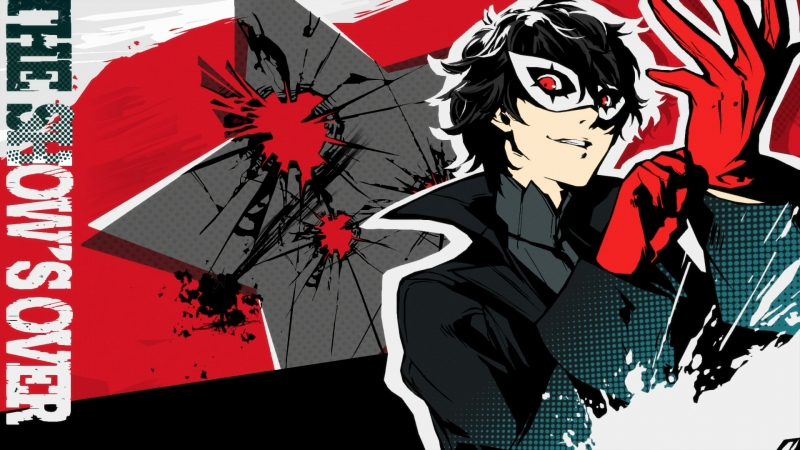
<p>In stark contrast to the slow burn of epic-length cutscenes that greet you in previous Persona games, Persona 5 starts its long journey with a bang by throwing you directly into a fast-paced foot chase through a vibrant, stylized Tokyo casino. That’s a bold move, and it’s emblematic of the entire experience. As we’re introduced to the complex yet approachable turn-based battle system in those opening moments, series fans will recognize not only returning systems from Persona 3 and 4, but also long-absent elements like ranged weapons and negotiation that haven’t been in a Persona game in over a decade, adding more depth and variety to combat. Persona 5 is the culmination of everything the JRPG series has been building to, with familiar elements dialed up to 11 and some welcome new surprises added into the mix.</p>

<p>In what’s by far the series’ strongest story to date, Persona 5 puts you in the capable shoes of a high school student who spends his evenings saving the world. By day, you’ll attend class, answer quiz questions, and live the life of a typical teenager, but after school you'll see the clever concept of invading the minds of corrupt adults who are up to no good and battling psychological demons in order to change their hearts.</p>
 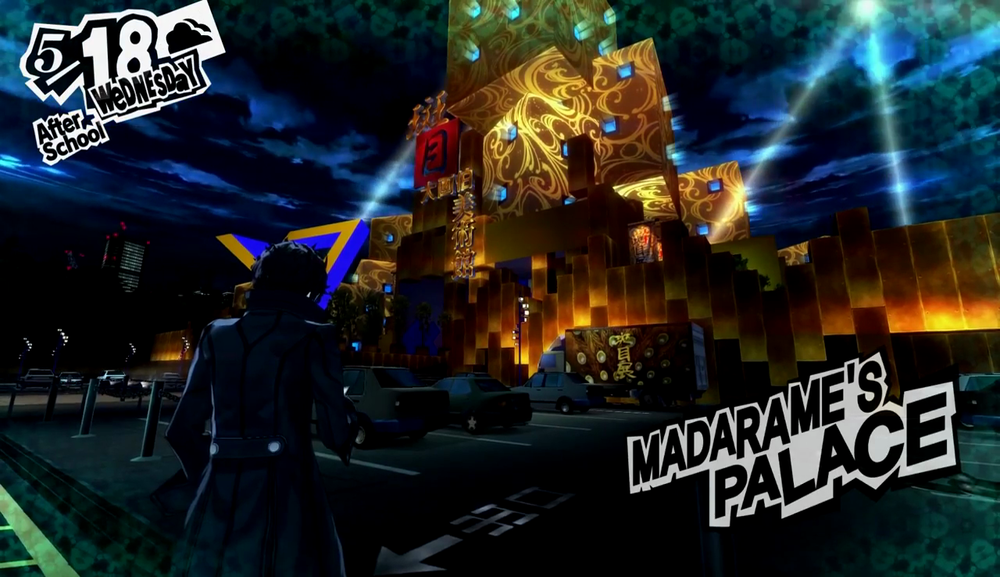
<p>These stand-out dungeons take place in “palaces” created within the mind of each target, and Atlus takes advantage of this to set them in diverse and outlandish places. Unlike the procedurally generated halls of Persona 3’s Tartarus or Persona 4’s Midnight Channel, Persona 5’s labyrinths are fully hand-built and feature unique puzzles and mechanics that vary with the theme of each dungeon and never repeat. A museum, for example, has very different security measures than a Medieval castle, and you’ll find very different enemies in a pyramid than you might in a spaceship. Assembling pieces of secret codes to solve a bank vault’s cryptogram or positioning tiles to interpret hieroglyphics feel almost like entirely different games. This gives each palace a sense of identity tied to the target and provides some smart, unpredictable story moments and challenges.</p>


<p>Persona 5’s sense of scope is staggering compared to the dungeons in Persona 3 or 4, with palaces easily double or triple the size of those games’ areas. While Persona 4 has you run through linear hallways until you reach the top of a dungeon, Persona 5 has branching paths, networks of hidden rooms, doors that require puzzles to open, and even excursions to other parts of the cognitive world outside of the dungeon itself. Starting each new dungeon is a bit daunting, but solving puzzles and progressing to each new area offers a wonderful sense of accomplishment.</p>
<blockquote>"Persona 5’s sense of scope is staggering compared to Persona 3 or 4".</blockquote>

<p>While chemistry between the characters never quite reaches the heights of Persona 4’s Scooby Gang vibe, Persona 5’s more cohesive main story does allow each character to shine in individual moments instead, exploring troubled pasts like the loss of a parent to add weight to present day scenarios. This series has never shied away from exploring serious subject matter, and here it shines light on abuse by teachers, drug sales, suicide, and a host of other issues that are handled well and are at times extraordinarily moving. Each character’s motivation for joining you is relatable and unique, and even each palace’s target has believable conviction. An unrepentant drug dealer, for example, reveals an origin that doesn’t necessarily justify his crimes, but fleshes him out into more than just a bad guy caricature.</p>

 
<p>Battle in Persona 5 is a familiar turn-based formula, with melee attacks, ranged weapons, and magic attacks based on one of eight elements. A bit like catching Pokemon, you collect Personas that you’ll use to fight, and each has its own unique set of skills as well as its own set of strengths and weaknesses. While each of your party members has one permanent Persona to use, the protagonist has the lone ability to hold multiple Personas at once. This means that you can acquire additional Personas to use as you progress, and collecting multiple Personas with different abilities is a fun way to tailor your play style to the type of combat you prefer. You can also fuse combinations of Personas to create new ones, which allows you to inherit certain skills until you’ve created the Persona that’s right for you.</p>

 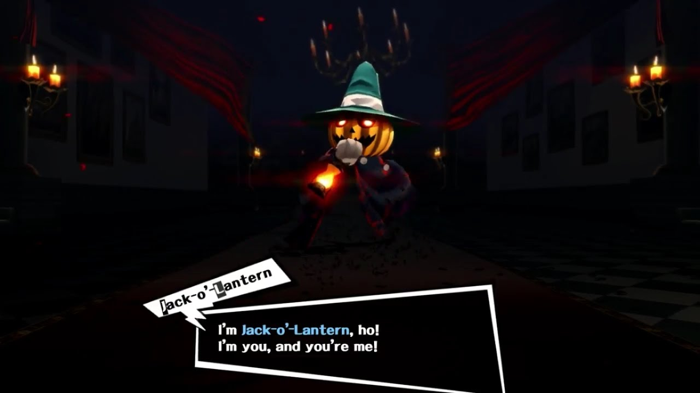
<p>Enemy designs are varied and colorful, ranging from humanoids that could almost pass as party members to extravagant complicated monsters, and seeing HD versions of enemies like Jack Frost is a treat for those that have been following the franchise for 20 years. Personas themselves also feature a bit of voice acting, which adds a nice extra layer of polish to negotiation during battles.</p>
<blockquote>"Seeing HD versions of long-time enemies like Jack Frost is a treat for longtime fans".</blockquote>
 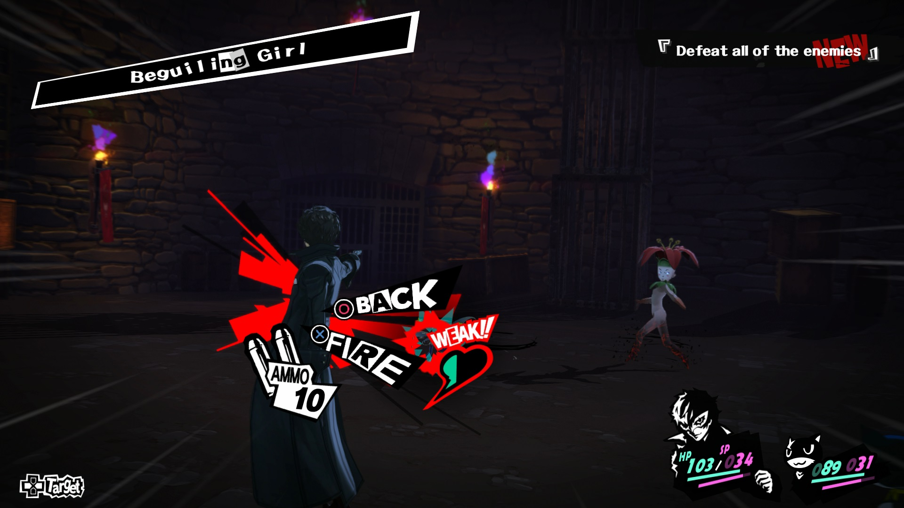
<p>Exploiting enemies’ elemental weaknesses is pretty standard fare (ice is weak to fire, etc.), and swapping between multiple Personas to keep up with the ever-changing vulnerabilities of foes you encounter helps keep combat from becoming too repetitive. The ability to swap between Personas allows you to choose the right element for any given occasion, which becomes important in battles against enemies who are invulnerable to all but one type of attack. As combat becomes more challenging and exploiting enemy weaknesses becomes imperative, smartly using the new Baton Pass ability can allow for devastating chains and exponential damage increases that completely turn the tide in battle. Baton Pass allows you to hand off your turn to another party member after earning an extra battle action by hitting an enemy’s weak point. That gives you the opportunity to chain together multiple passes, adding a new element of strategy to combat. This is a game changer, as you not only have to make sure you have a Persona with the right element to take down an enemy, but also that you’ve selected party members with skills that can keep the chain going.</p>

<p>Of course, like any good JRPG, Persona 5 needs a place to allow you to grind to higher levels by fighting enemies over and over. While you can’t return to palaces once they’re complete, you can continually return to a (singular) area called Mementos. Mementos is a large, separate dungeon that returns to the format of procedurally generated hallways like in previous Persona games, and new, deeper levels are unlocked as you beat more palaces. It’s a welcome change of pace in that it provides straightforward battles with no puzzles in between, which is a nice break after working through a particularly challenging dungeon. Since you can’t return to palaces, Mementos also serves as a great place to recruit Personas that you may have missed in previous dungeons. Personas you previously encountered will begin to turn up in new layers of Mementos after you’ve beaten the palace where they originally appeared. Combined with the ability to fuse Personas into new combinations, this thankfully prevents any Personas from being truly missable.</p>

 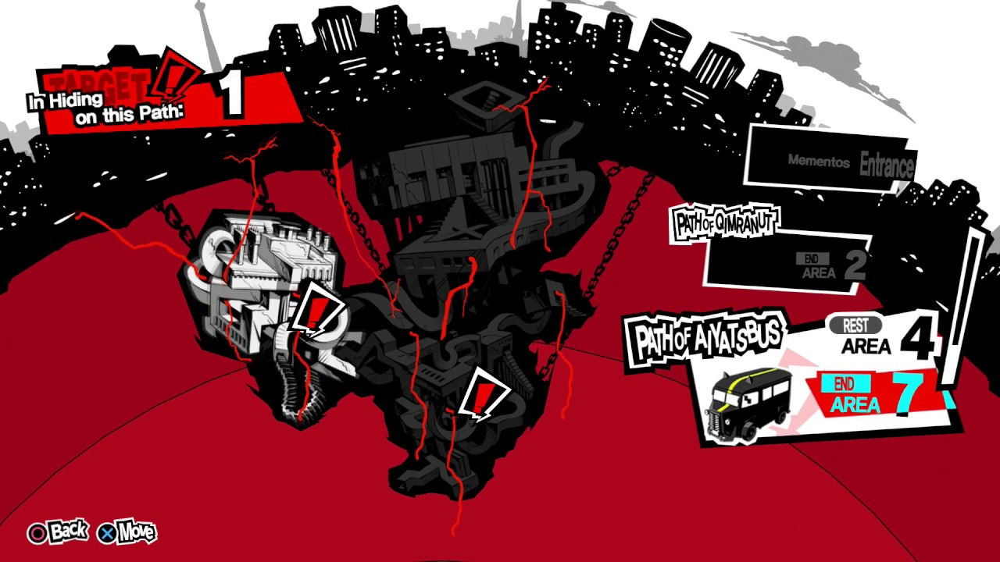
<p>Mementos is also home to Persona 5’s side missions, which involve triggering smaller-scale changes of heart in enemies like school bullies or clingy exes in order to receive bonus cash and items. These missions aren’t much more than short vignettes and didn’t really provide deep enough stories to make me care about the minor characters, in most cases. That said, a few stood out as particularly effective, such as a pet lover fighting against animal abuse or workers fed up with the exploitive practices of their boss. Missions like these were surprisingly moving in some cases, or ended with unexpected humor in others. The most elaborate side missions are those that you earn through Confidants, which are party members or other characters who you’ll form relationships with and level up over time. These Confidants will occasionally introduce you to additional tangential characters whose heart you’re required to change in Mementos in order to continue progressing your relationship with that Confidant. These were generally great and helped to reveal a neat twist in the corresponding story, such as a sympathetic person actually being sinister or unexpected connections between characters.</p>
              <blockquote>"Missions like these were surprisingly moving in some cases, or ended with unexpected humor in others". </blockquote>
<h2>Social Climber</h2>
 
<p>Persona 5 is a solid modern turn-based JRPG first and foremost, but it also quickly becomes a captivating time-management simulator. When you’re not saving the world, your time after school is your own. You’re able to visit hub districts within Tokyo for activities like training at the gym, fishing, working a part-time job, batting practice, seeing a movie, or just heading home to study, play a retro game, or read one of dozens of books. These activities are a gigantic improvement upon the comparatively limited amount of things to do in Persona 4, and a fun way to expand your personal stats like Charm, Guts, or Kindness.</p>
 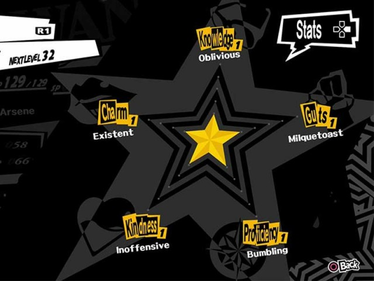
<blockquote>"Persona 5 gives every decision a fantastic amount of weight".</blockquote>
<p>On top of social activities, you also have 20 Confidants to spend time with, forging bonds with fellow students or other citizens of Tokyo. As you level up these bonds you’ll earn relevant stat increases and gameplay advantages that are surprisingly robust. Spending time with a speech-giving politician, for example, might help your negotiation skills, while training with an arcade’s light-gun expert helps your expertise in ranged weapons, and a local board game champion will give you new strategies in battle. Balancing Persona 5’s many activities with maintaining these social links (each of which can only be advanced on specific days) is a welcome challenge and will require methodical notetaking for anyone who wants to maximize each day of the calendar.</p>
 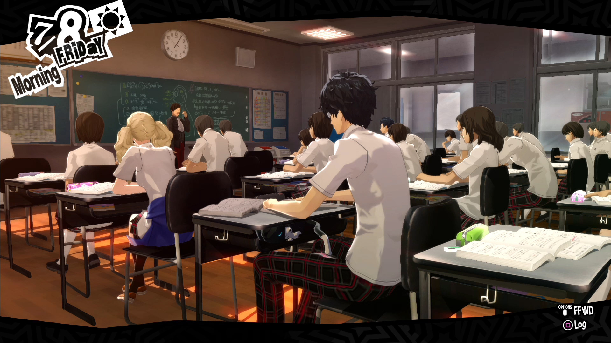

<p>Confidants themselves are voiced and come in a wide range of ages, genders, and circumstances, with noteworthy stories for each. I found myself almost as interested in some Confidants’ stories as I was in the main plot, which offers even more incentive for dedicating time to hanging out with those people. As in previous games, many of the Confidants can still advance into intimate relationships at their highest levels, though it was disappointing to see that Persona 5 still doesn’t offer same-sex dating, despite plenty of sexual tension between the protagonist and a few of the male Confidants.</p>
 
<p>By offering so many options and only a finite amount of free time, Persona 5 gives every decision a fantastic amount of weight. Choosing to work part-time might give you extra cash to buy better weapons, but it comes at the cost of ranking up a Confidant or increasing your stats. Spending time with a specific Confidant might help you learn a skill that fits your play style, but it means sacrificing learning more about a different character whose story you might be more interested in. Maximizing the skill you’ve been grinding away at or finishing a side story after multiple in-game months of watching it progress are tremendously rewarding experiences, and even lamenting the opportunities you missed adds a unique layer of replayability that makes starting a New Game+ all the more enticing.</p>
<h2>Tokyo Jungle</h2>
 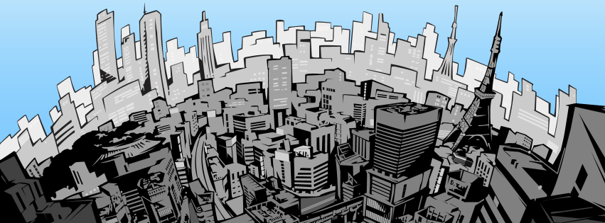
<p>Aside from the dozens of activities available, the very act of exploring Persona 5’s Tokyo is a delight. From city lights at night to crowded subways during your school commute, every part of this world is bursting with vibrant color, and every detail feels meticulously thought out and eerily accurate to real-world Tokyo. The anime-like art style is complemented by full animated cutscenes that are absolutely gorgeous and help to punctuate major story events.</p>
 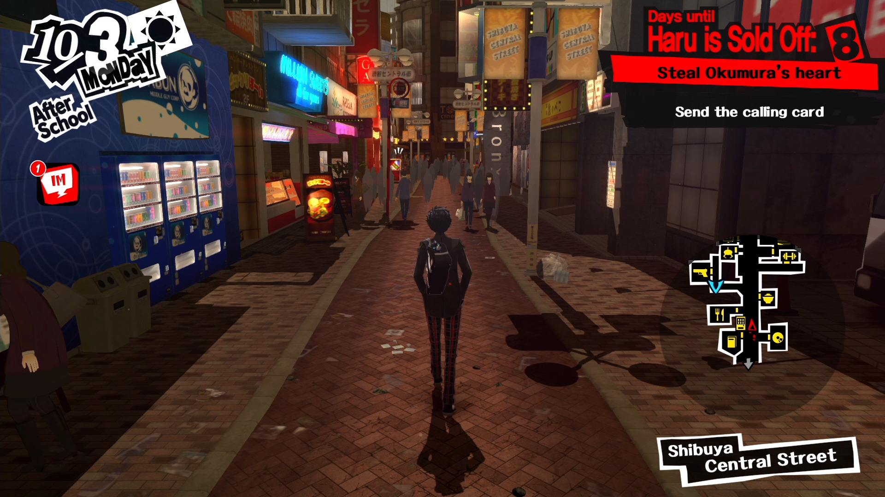
<p>Each area of Tokyo feels completely distinct, with the major hubs of Shibuya, Shinjuku, and Akihabara each offering aesthetic differences on top of locations reminiscent of their actual real-life counterparts. Shinjuku features a seedy dive bar in contrast to Shibuya’s family-friendly diner, and Akihabara is home to an arcade and shops for buying games and electronics. As the subway-themed map begins to fill in, you get a sense of just how much there is to do in Tokyo compared to Persona 3 and 4’s relatively tiny Tatsumi Port Island and Inaba.</p>

 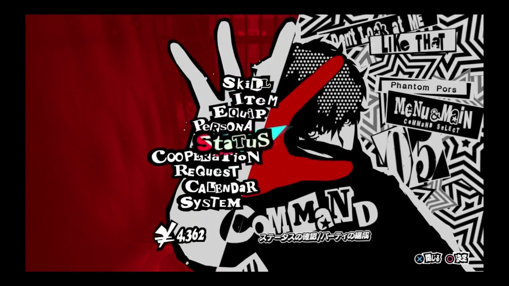
<p>All of this is further enhanced by Persona 5’s impressive sense of style. I found myself flicking back and forth in menus over and over simply to appreciate the slick transitions. Sharp design choices permeate even tiny details of gameplay, like scene changes that vary based upon your mode of transportation as you leave each area, or a free-flowing results screen after victory in battle.</p>
<blockquote>"The very act of exploring Persona 5’s Tokyo is a delight".</blockquote>
<p>It almost feels strange to highlight since the incredible style is immediately apparent after looking at it for even a few seconds, but I can’t overstate the number of times that I marveled at the gorgeous effects like ambushing an enemy and flowing directly into battle, or went out of my way to explore on a rainy day to appreciate weather effects or small touches like pulling out an umbrella as you leave a building. Persona 5’s dynamic acid jazz-inspired soundtrack also helps to highlight everything from quiet moments to bombastic boss battles, helping to tie together an overall experience that feels truly special.</p>
<h2>The Verdict</h2>
 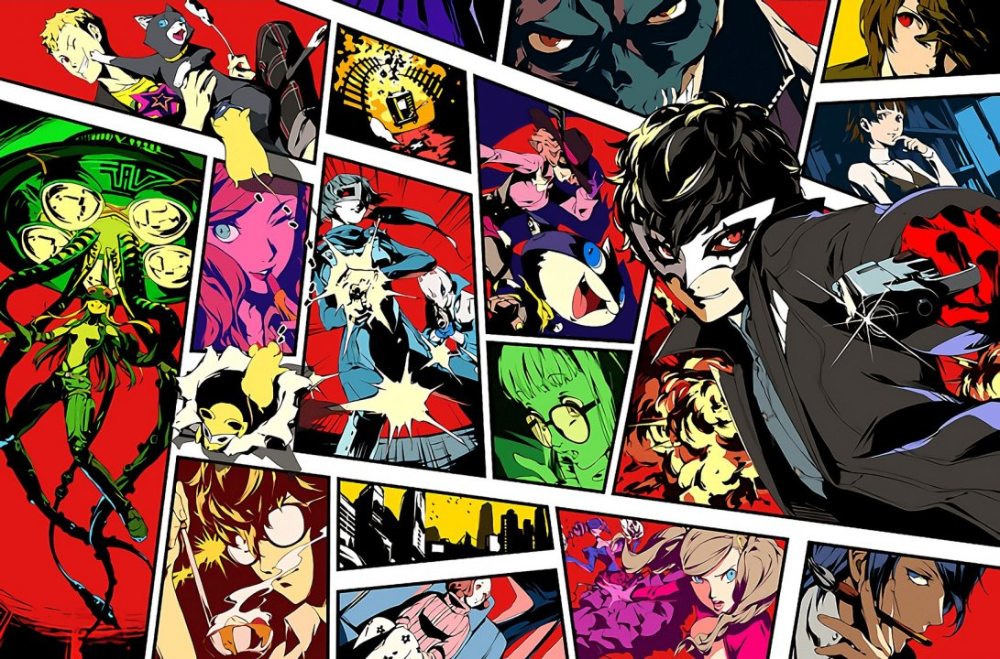
<h4>Persona 5 is a massive, gorgeous JRPG with well over 100 hours of gameplay for completionists. With more to do than ever and the series’ strongest story to date, it stands out as an extraordinary, memorable experience and easily one of the deepest JRPGs of the last decade. Its sprawling dungeon design and stylish, fully realized world are an absolute joy to explore, and even after three playthroughs and the Platinum trophy, I find myself itching to go back to try different dialogue options with Confidants or revisit particularly fun puzzles. This is a new gold standard for Japanese RPGs and by far the best entry in the series yet.</h4>
            </div>
         